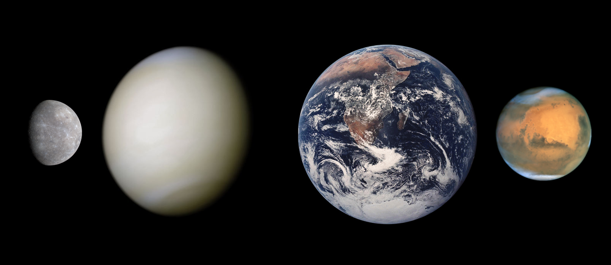

Caracteristici generale

Cele patru planete interioare sau telurice / terestre au o compoziție densă, de roci, cu puțini sau chiar fără sateliți și fără sisteme de inele. Ele sunt compuse în mare parte din minerale refractare, cum ar fi silicații, care formează scoarțele și mantalele planetelor, și metale ca fierul și nichelul, care formează nucleele planetare. Trei din cele patru planete interioare (Venus, Terra și Marte) au o atmosferă destul de densă pentru a genera vremea; toate au cratere de impact și caracteristici tectonice de suprafață, cum ar fi rifturi și vulcani. Termenul de „planetă interioară” nu trebuie confundat cu termenul de „planetă inferioară”, care desemnează planetele mai apropiate de Soare decât Pământul (adică Mercur și Venus).
Mercur
Mercur (0,4 UA de la Soare) este cea mai apropiată planetă de Soare și cea mai mică planetă din sistemul solar (0,055 mase terestre). Mercur nu are niciun satelit natural, iar singurele caracteristici geologice cunoscute, în afara craterelor de impact, sunt crestăturile din scoarță, care cel mai probabil se datorează unei perioade timpurii de contracție din trecutul său. Atmosfera planetei Mercur este aproape neobservabilă și este formată din atomi desprinși de pe suprafața sa de către vântul solar. Apariția nucleului său de fier relativ mare și mantaua subțire nu au fost încă suficient explicate. Ipotezele includ faptul că straturile exterioare au fost dezagregate în urma impactului cu un obiect gigantic și că acreția completă a fost împiedicată de energia Soarelui tânăr.
Venus
Planeta Venus (0,7 UA de la Soare) este asemănătoare ca mărime cu Pământul (0,815 mase terestre) și, la fel ca și Terra, are o manta subțire de silicat deasupra unui nucleu de fier, o atmosferă substanțială și indicii ale unei activități geologice interne. Totuși, planeta este mult mai uscată decât Pământul iar atmosfera sa este de nouăzeci de ori mai densă. Venus nu are niciun satelit natural. Este cea mai fierbinte planetă, temperaturile de la suprafață depășind 400 °C, cel mai probabil din cauza cantității de gaze cu efect de seră din atmosferă. Nu a fost detectată nici o dovadă definitivă a unei activități geologice la momentul actual pe Venus, dar planeta nu are un câmp magnetic care să prevină epuizarea atmosferei sale substanțiale, ceea ce sugerează că aceasta este încontinuu alimentată de către erupțiile vulcanice.
Pământ
Pământul (de asemena și Terra; 1 UA de la Soare) este cea mai mare și cea mai densă planetă interioară, singura despre care se cunoaște la momentul actual că este geologic activă și singurul loc din sistemul solar unde se cunoaște că există viață. Hidrosfera sa lichidă este unică printre planetele terestre, iar Terra este singura planetă unde au fost observate plăci tectonice. Atmosfera Pământului diferă radical față de cea a altor planete, fiind shimbată de prezența vieții și conținând aproximativ 21% de oxigen liber. Planeta Pământ are doar un satelit natural, Luna, care este singurul satelit mare al unei planete terestre din sistemul solar.
În primele miliarde de ani ai istoriei Pământului, viața a apărut în oceane și a început să afecteze atmosfera și suprafața Pământului, ducând la proliferarea organismelor aerobe și anaerobe. Unele dovezi geologice indică faptul că viața ar fi putut să apară cu 4,1 miliarde de ani în urmă. De atunci, combinația distanței Pământului față de Soare, proprietățile fizice și istoria geologică au permis vieții să evolueze și să prospere. În istoria Pământului, biodiversitatea a trecut prin perioade lungi de expansiune, punctate ocazional de extincții în masă. Peste 99% din toate speciile care au trăit vreodată pe Pământ sunt dispărute.
Marte
Marte (1,52 UA de la Soare) este mai mic decât Terra și Venus (are 0,107 mase terestre). Planeta posedă o atmosferă formată în mare parte din dioxid de carbon, cu o presiune la suprafață de 6,1 milibari (aproximativ 0,6% din presiunea atmosferică de la suprafața Pământului). Suprafața sa, brăzdată de vulcani vaști ca Olympus Mons și rifturi cum ar fi Valles Marineris, reprezintă o dovadă a activităților geologice care au persistat până relativ recent, cu două milioane de ani în urmă. Culoarea sa roșiatică provine de la oxizii de fier (rugină) din sol. Marte are doi sateliți naturali foarte mici (Deimos și Phobos) despre care se crede că au fost asteroizi capturați de gravitația planetei.